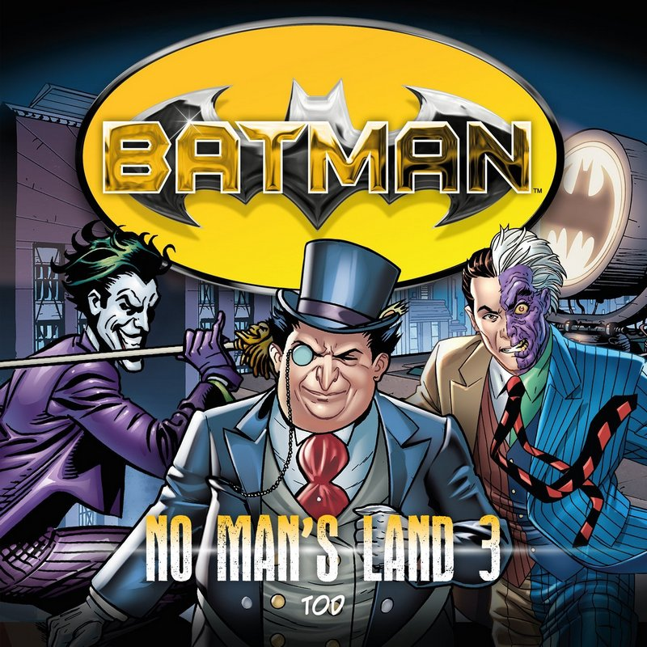

© HighscoreMusic
Die dritte Folge der sechsteiligen Hörspiel-Miniserie nach dem Roman von Greg Rucka.
Der Kampf um Gotham City spitzt sich weiter zu und Two-Face plant den entscheidenden Schlag. Wird es ihm gelingen, sich die gesamte Stadt unter den Nagel zu reißen oder wird ihm Batman doch noch einen Strich durch die Rechnung machen können? Was ist mit dem Pinguin? Wird er noch ein Wörtchen in dieser Angelegenheit mitzureden haben?
Sprecher Merete Brettschneider, Sascha Rotermund, Reent Reins, Tobias Kluckert, Thomas Schmuckert, Martin Keßler, Tim Kreuer u.a.
1 Audio-CD